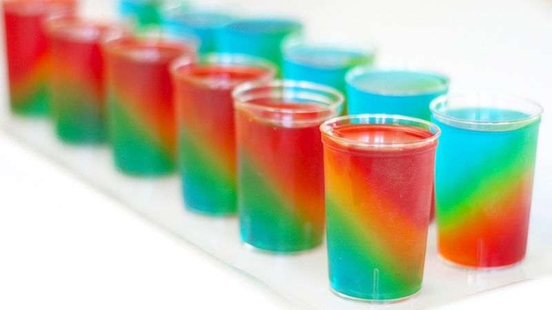

Margarita Jell-O Shots

Description
I had to make hundreds of Jell-O® shots for a wedding, so I decided to have fun with them and try out some new mixes. This was my margarita-flavored shot, a bit strong but good if you want variety with your selection. If you want them more palatable, substitute water for a bit of the alcohol.
Ingredients
- 1 cup boiling water
- 1 (3 ounce) package lime-flavored gelatin mix (such as Jell-O®)
- ⅓ cup tequila
- ⅓ cup triple sec
- ⅓ cup water
- 15 plastic shot glasses, or as needed
Steps
- Combine boiling water and gelatin mix in a bowl. Stir to dissolve. Add tequila, triple sec, and water. Stir again.
- Pour mixture into shot glasses. Refrigerate until set, about 5 hours.